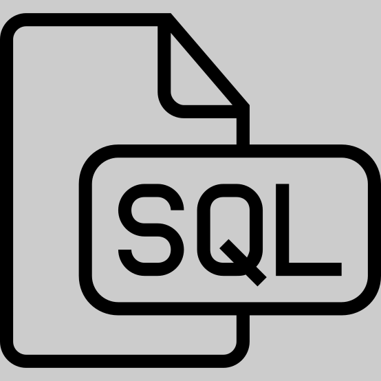
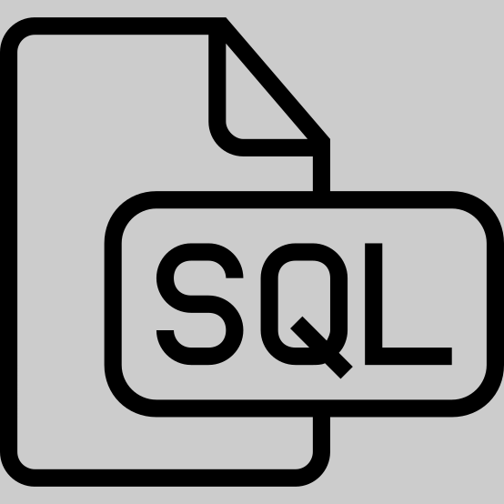
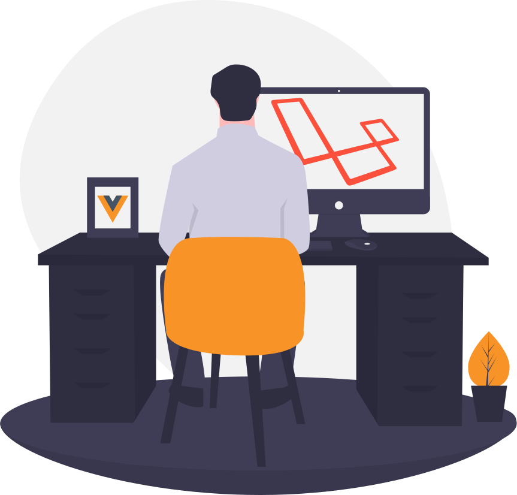

Odenilson Marques
Desenvolvedor Back - End
Este é o meu website oficial e portfólio
Aqui você encontra alguns dos projetos que tive a satisfação de desenvolver


 


Sobre
Desenvolvedor Back - End
Graduando em Sistema de Informação no Instituto Federal do Maranhão. Atualmente trabalho com o desenvolvimento de sistemas, sites, bancos de dados e manutenção de sistemas legados. Utilizo tecnologias web para desenvolvolvimento dos projetos, empregando liguangens como: Php, Sql e Javascript, além de fazer uso de frameworks como Laravel e Bootstrap.Também tenho familiaridade com a criação de ambientes de desenvolvimento usando Docker.
Portfólio
Contatos